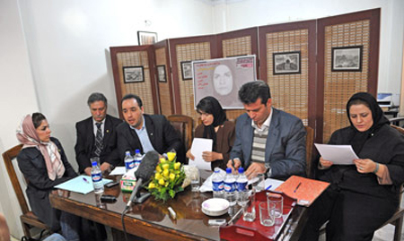

|
|
وکلای فعالان جنبش زنان روند دادرسی پرونده موکلان خود را غیرقانونی خواندند/ سخنان عالیه اقدام دوست از زندان
سه شنبه13 اسفند 1387

عکس حجت الله سپهوند-سایت میدان
تغییر برای برابری:ایدا سعادت- در آستانه ی هشت مارس، روز جهانی زن و در نشست مطبوعاتی "حبس فعالان زن، حبس جنبش زنان نیست" تعدادی از وکلای داوطلب فعالان جنبش به روش های برخورد دستگاه قضایی با پرونده های موکلانشان زنان اعتراض کردند.
در این نشست که به دعوت برخی از فعالان "ائتلاف برای آزادی عالیه اقدام دوست" و با حضور خبرنگاران داخلی و خارجی تشکیل شد، نسرین ستوده، محمدعلی دادخواه، نسیم غنوی، سارا صباغیان، مهدی حجتی و محمد مصطفایی و همچنین شیرین عبادی که به صورت تلفنی در کنفرانس شرکت کرد، از برخوردهای غیرقانونی با فعالان جنبش زنان و موکلان خود ابراز نگرانی کردند. این وکلا با تشریح روند بررسی پرونده های موکلان خود نقض مکرر حقوق آنان را یاآور شده و خواستار توقف احکام صادره از سوی دستگاه قضایی برای موکلان خود شدند. وکلای عالیه اقدام دوست فعال جنبش زنان که در پی اجرای حکم سه سال حبس تعزیری به جرم شرکت در تجمع مسالمت آمیز 22 خرداد 1385 در زندان اوین به سر می برد نیز از آخرین وضعیت وی خبر دادند.
حمایت هزار و هفتصد نفر و هفتاد گروه و سازمان حقوق بشری از آزادی عالیه اقدام دوست که از طریق سایت کمپین یک میلیون امضا، "تغییر برای برابری" جمع آوری شده است نیز در همین نشست مطبوعاتی اعلام شد.
شیرین عبادی: برای اولین بار است که در پرونده ای مامور ابلاغ اوراق قضایی را در خیابان نصب می کند
نسیم غنوی که به همراه نسرین ستوده و شیرین عبادی وکالت پرونده عالیه اقدام دوست را بر عهده دارند اتهامات عالیه اقدام دوست را اقدام بر علیه امنیت کشور از طریق شرکت در تجمع غیرقانونی و اتهام اخلال در نظم عمومی عنوان کرد و گفت در جلسه رسیدگی اولیه که در شعبه 15 دادگاه انقلاب تشکیل شد عالیه اقدام دوست ضمن دفاع از مواضع خود اظهار داشت به خاطر قوانین تبعیض آمیز و مشکلاتی که در زندگی شخصی خود با آن روبه رو بوده است در هر تجمعی که برای حفظ حقوق زنان باشد و تقاضای آن رفع تبعیض از قوانین باشد شرکت خواهد کرد. همین مساله منجر به صدور حکم سه سال و چهارماه حبس و بیست ضربه شلاق برای وی در دادگاه بدوی شد و پس از اعتراض وکلای وی پرونده به شعبه 36 دادگاه تجدید نظر ارجاع و سه سال حبس برای ایشان تایید شد.
وی عدم ابلاغ رای به وکلای عالیه اقدام دوست را برخلاف ضوابط قانونی دانست و از ثبت درخواست خود برای اعمال ماده 18 در پرونده عالیه اقدام دوست در دادگاه تجدید نظر خبر داد. وکیل عالیه اقدام دوست تاکید کرد به رغم درخواست ملاقات حضوری و مراجعه به زندان اوین موفق به دیدار با عالیه اقدام دوست نشده است: "در مراجعه ی حضوری که به زندان اوین داشتم مسئولین زندان اظهار کردند که طبق بخشنامه ای که وجود دارد بر اساس آن محکومین و متهمین دادگاه انقلاب حتما باید از قاضی صادرکننده رای یا دادیار ناظر زندان همان دادسرا اجازه ملاقات بگیرند. دوبار هم با آقای احمدزاده ملاقات حضوری داشتم که به نظر می رسید ایشان تمایلی به همکاری در این زمینه ندارند چرا که معتقدند که دادیار ناظر زندان اوین باید این دستور را بدهد".
شیرین عبادی رئیس کانون مدافعان حقوق بشر نیز از طریق تماس تلفنی در این نشست مطبوعاتی شرکت کرد با ابراز تاسف از وضعیتی که برای عالیه اقدام دوست، پیش آمده است این حکم را غیرعادلانه و خواست وی برای تغییر قوانین تبعیض آمیز را کاملا مشروع خواند و گفت موکل اش نه تنها سزاوار مجازات حبس نیست بلکه باید به علت فعالیت های برابری خواهانه مورد تقدیر قرار گیرد.

صحبت هاي عاليه اقدام دوست اززنان در روزكنفرانس مطبوعاتي
چهار تقاضا ودو اعتراض
1. آزادي زندانيان عقیدتی-سياسي، 2. آزادي مردم ايران از فقر، تورم،گراني، بي مسكني و بيكاري، 3. آزادي زنان اززندان قوانيني مدني تبعيض آميز، 4. تقاضا از حقوق بشر جهاني براي پي گيري كمك مالي آقاي قاليباف در مورد زندانياني كه وثيقه هاي سنگين دارند و زندانیان مالي
اعتراضها
1. اعتراض براي زندانیان به طور عم در استفاده از مرخصی كه جزو حقوق زندانيان محسوب ميشود
2. اعتراض به رفتار غير عادلانه نسبت به زندانيان به ويزه براي مرخص رفتن
عبادی دلیل اجرای مجازات سه سال حبس تعزیری برای عالیه اقدام دوست را هواداری وی از یکی از گروه های سیاسی دانست: " دادگاه از ایشان در خصوص سابقه کیفری سوال می کند و پس از این که مشخص می شود که به علت هواداری یکی از گروه های سیاسی مدتی را در زندان گذرانده است طی روندی که از سوی وکلای پرونده ی وی مصداق تفتیش عقاید خوانده شده و مورد اعتراض قرار گرفت مجازات وی تشدید شده و به سه سال حبس تعزیری قطعی محکوم می شود. حکم دادگاه پس از اعلام به در دفتر وکالت من که در ورودی آن در خیابان است الصاق شده برای اولین بار است که در پرونده ای مامور ابلاغ اوراق قضایی را در خیابان نصب می کند و طبیعی است که برگه ای که در خیابان چسبانده شود به دست کسی نرسد. من تعجب می کنم که چطور در این یک مورد خاص ادعا می کنند که برگه را در خیابان روی در نصب کرده و حتا به داخل ساختمان هم نینداخته اند".
او اظهار امیدواری کرد که با پیگیری هایی که در حال انجام است و نیز با توجه به اشکالات شکلی و ماهوی که در این پرونده وجود دارد هر چه سریع تر عالیه اقدام دوست از زندان آزاد شود.
حبس و زندان پاسخ مناسبی برای خواست قانونی فعالان کمپین یک میلیون امضا نیست
نسرین ستوده یکی دیگر از وکلای فعالان جنبش زنان تجربه دوسال اخیر جنبش زنان را غیرمنتظره توصیف کرد و گفت: "فعالان جنبش زنان تصور نمی کردند که اقدامات کاملا قانونی آنان که در قانون اساسی و قوانین جزایی و کنوانسیون های بین المللی نیز مورد تایید قرار گرفته است این چنین نادیده گرفته شده و در رسیدگی های دادگاه انقلاب زیرپا گذاشته شود. از سوی دیگر بسیاری از فعالان اجتماعی تصور نمی کردند که این زنان برای رفع شرایط تبعیض آمیز حاضر باشند تا اینجا گام بردارند".
این وکیل دادگستری به احکام حبس فعالین زن پس از تجمع 22 خرداد 85 اشاره کرد و گفت به رغم آن که عکس هایی که از این تجمع در سایت های خبرگزاری های مختلف منتشر شد حاکی از خشونت آشکار، تخلف پلیس و نقض حقوق شهروندی این افراد بود، متاسفانه شکایت وکلای آنان از این اعمال خشونت نادیده گرفته شده و برای زنان پلیس حاضر قرار منع تعقیب صادر شد. وی با اشاره به صدور احکام تعزیری طویل المدت و شلاق و بلاتکلیفی در بازداشت های موقت برای برخی از فعالان کمپین، جمع آوری امضا را حق شهروندی آنان دانست و گفت: "همچنان که افراد یک جامعه حق دارند به شهرداری محل خود نامه بنویسند و خواستار ارائه خدمات شهری به محل زندگی خود شوند، حق دارند به مجلس قانونگذاری نامه بنویسند و تقاضای تغییر قوانین تبعیض آمیز را داشته باشند. بسیار جای تاسف دارد که که چنین اقدامی با حبس های طویل المدت مواجه می شود. "
دادخواه: صدور احکام فعالان زن با موازین قانون و شرع منطبق نیست
محمد علي دادخواه، با اشاره به عدم توجه مسئولان قضایی به اعتراض های وی از اجرای حکم شش ماه حبس تعزیری شهناز غلامی خبر داد و گفت موکل وی مجددا به 6 ماه زندان محکوم شده و پیش از ابلاغ رسمی حکم از اواسط دی ماه گذشته بازداشت و به زندان منتقل شده است.
دادخواه عدم رعایت حق حضور وکیل در جلسات دادرسی را یکی از موارد نقض قوانین دانست وگفت: "مسوولان دادگاه هاي انقلاب بدون توجه به اين اصل صريح قانون احكام موكلان پرونده ها را از طريق تلفن به آنها اطلاع مي دهند، و گاهي از موكل مي خواهند كه موضوع (ابلاغيه تلفني) را به وكيل منتقل نكند، اما اين موضوع نه تنها برخلاف نص صريح قانون، بلكه برخلاف شرع است و رییس قوه قضائیه مکلف است که در صورت عدم تطبیق پرونده ها با موازین قانونی و شرعی اجرای احکام قطی آن را متوقف و قاضی جدیدی برای رسیدگی به پرونده تعیین کند".
مصطفایی: رسیدگی به پرونده های فعالان جنبش زنان دارای اشکالات شکلی و ماهوی است
محمد مصطفایی دیگر وکیل فعالان جنبش زنان با نقد صلاحیت دادگاه انقلاب برای رسیدگی به پرونده های فعالان جنبش زنان و طرح ایرادات شکلی که به پرونده های آنان وارد است آغاز کرد: "برای فعالین زنان که در روز 13 اسفند بازداشت شدند چهار اتهام در نظر گرفته شده است و برای این که دادگاه انقلاب صلاحیت بررسی این پرونده ها را داشته باشد اقدام علیه امنیت ملی هم ذکر شده است. طبق ماده 5 قانون تشکیل دادگاه های عمومی انقلاب، رسیدگی به اتهام اخلال در نظم عمومی در دستور کار این دادگاه ها قرار ندارد. بنابراین احکام صادر شده فاقد وجاهت قانونی و نقض حقوق شهروندی و دادرسی ناعادلانه محسوب می شود" .
مصطفایی با تاکید بر رعایت نشدن موازین قانونی در تحقیقات اولیه، احکامی که به این شکل برای فعالان جنبش زنان صادر می شوند را ناعادلانه خواند: " تحقیقات باید با حضور وکیل باشد و به گونه ای انجام شود که متهم امکان دفاع از خود را داشته باشد ولی در پرونده 33 نفر از بازداشت شدگان مقابل دادگاه انقلاب این شرایط وجود نداشت. سوالاتی که از آنها پرسیده می شدند این بودند که به طور خلاصه سوابق سیاسی و اجتماعی و فرهنگی خود بگویید . هیچ دلیلی برای انتساب اتهام به این افراد نبود اما این افراد در مقابل سوالات تلقینی بازجویان قرار داشتند و همین امر ملاک صدور قرار مجرمیت این افراد شد و اتهاماتی که در پرونده ی آنان درج شد عبارت بودند از اجتماع و تبانی به قصد برهم زدن امنیت کشور اخلال در نظم عمومی و تمرد در مقابل پلیس و دادگاه هم در وحله ی اول برخی از افراد را تبرئه کرد اما بعدها شعبه 13 برای برخی از همین فعالین 6 ماه حبس تعلیقی و 30 ضربه شلاق به صورت دوسال تعلیق را صادر کرد".
حجتی: حضور وکلا در مرحله ی تحقیقات مقدماتی با مانع رو به رو است
مهدی حجتی نیز با ذکر روند بررسی پرونده زینب بایزیدی دیگر فعال جنبش زنان و کمپین یک میلیون امضا که هم اکنون در حال گذراندن دوره 4 سال حبس تعزیری خود در زندان است، به کاستی های دیگری در برخورد قوه قضائیه با پرونده فعالان جنبش زنان اشاره کرد: "قانون گذار در تبصره ماده 128 قانون آیین دادرسی کیفری محدودیتی برای حضور وکیل در مرحله ی تحقیقات مقدماتی قائل شده است و اگر هم اجازه حضور صادر شود تنها یک حضور فیزیکی خواهد بود تا زمانی که در خاتمه تحقیقات بازپرس یا دادیار مربوطه اجازه دهد که اگر وکیل توضیحی در مورد موضوع دارد ارائه کند. پرونده ای که سنگ بنای تحقیقات مقدماتی در آن کج گذاشته شود تا آخر کار روند مثبتی را طی نخواهد کرد".
این وکیل دادگستری تاکید کرد موکل اش در مرحله مقدماتی دادرسی از دسترسی به وکیل محروم بوده و حکم او تنها بر مبنای اعترافات دیگر متهمان در ارتباط با گروه پژاک صادر شده است. وی گفت در تحقیقات اولیه فعالیت موکل وی در رابطه با حقوق زنان و کمپین یک میلیون امضا نیز مورد سوال واقع شده است.
سارا صباغیان یکی دیگر از وکلای شرکت کننده در این نشست مطبوعاتی، با تشریح روند رسیدگی به پرونده زینب پیغمبرزاده به تناقض در روند صدور حکم برای این فعالین اشاره کرد و گفت در حالی که اتهامات کلیه این افراد یکسان هستند برخی از فعالان این پرونده از شعبه 13 دادگاه انقلاب حکم برائت گرفته اند و برخی دیگر با احکام حبس طولانی و شلاق مواجه شده اند. صباغیان همچنین با اشاره به پرونده عشا مومنی وی را از جمله فعالینی دانست که از حقوق قانونی خود محروم شده است و در حالی که قرار وثیقه 300 میلیونی برای وی صادر شده است همچنان ممنوع الخروج بوده غیرقانونی بودن روند رسیدگی شامل حال وی نیز شده است.